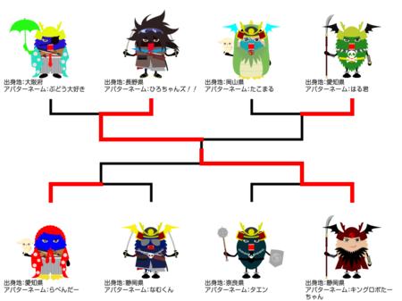
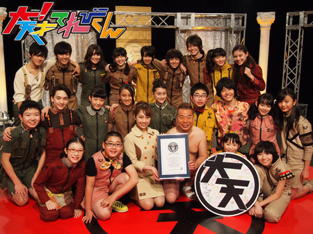
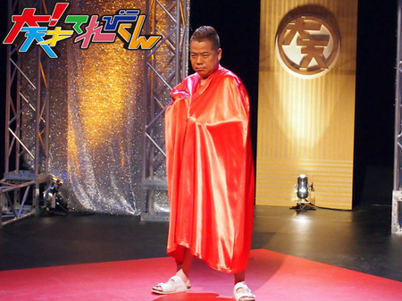
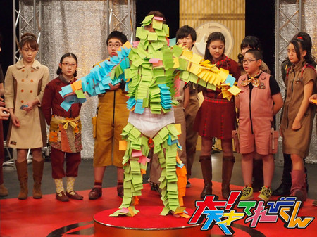
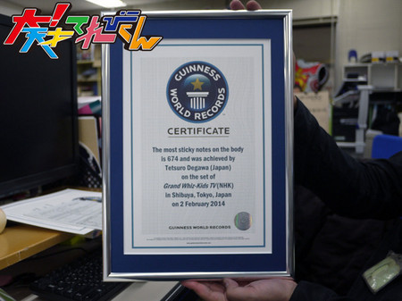
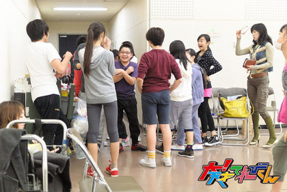
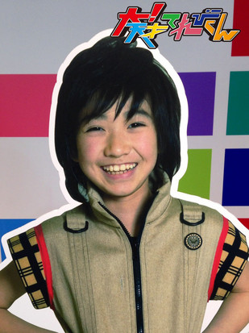

<<2014年1月 | トップページ | 2014年3月>>
2014年2月
【冬のイベントの思い出】中里萌
★冬イベントの思い出★
冬イベ！
とーっても楽しかったです！！
私は、今まで舞台で演技するという経験が1度もなく
冬イベの稽古が始まる前は、心配、緊張、不安の気持ちでいっぱいでした。
大！天のドラマとは違って、
舞台の演技は、1番奥のお客さんまで、届くようにしなければいけないと聞いて、
大きく表現できるのか、と不安でした。
実際に稽古をやって、思ってたとうりに難しかったです。
その中でも、花屋で出てくるところが印象的です。
「私は、花屋です！」などのセリフは無いので、
いくつかのセリフと動きで、花屋と分かるようにしなければいけません。
そのために稽古では、セリフ無しのサイレントで練習しました。
この練習のおかげで、花屋らしい動きができたかなと自分では思います。

★小説：「大！天才てれびくん」★
「トントントン コトコトコト」
あきえお母さんが、野菜を切っている音が、朝から聞こえる。
私の兄弟12人は、それぞれ違う事をしている。
妹の延命ちゃんは、かわいい顔と変顔を、交ごにやっている！
弟のゆうがは、演技練習をしている。
妹のみれな、かわいいポーズの研究。
美晴は、ものまね！
つかちゃんは、腹おどり！
ゆいと、ズビーは、変な動きを。
太一は、ダジャレを考えてる。
しんやは、朝から踊っている。
ニイナは勉強！
しゅんやは、サッカー練習！
そしてそして、
出川お父さんは、笑顔で、みんなをながめてる＾ｖ＾！！
投稿者:中里萌 | 投稿時間:18時00分 | カテゴリ：We are 大天才テレビジョン | 固定リンク


 " title="ソーシャルブックマークについて">
" title="ソーシャルブックマークについて">
※NHKサイトを離れます。
最強アバターを決める「アバタイセン」〜第10戦〜
地上最強のアバターを決める超大型企画「アバタイセン」。今回は第10戦。
大天才テレビジョン内部にあるコンピューターが自動対戦した結果、
全世界に存在する 全26804体 のアバターの頂点に立ったのは…
静岡県 キングロボたーちゃんさん

おめでとう！
ベスト８の対戦結果はこちらです（左クリックで拡大します）。

アバターの強さは、『パーツ』や『色』の組み合わせで変わります！
番組HPにあるトレーニングセンターで自分のアバターと、てれび戦士や出川特命Pの
アバターと対決させて、最強アバターになる組み合わせを見つけてほしい！
アバターの制作はこちらから！
投稿者:大天才テレビジョン社員３号 | 投稿時間:20時00分 | カテゴリ：大！木曜LIVE | 固定リンク
" title="ソーシャルブックマークについて">
※NHKサイトを離れます。
【冬のイベントの思い出】野田真哉
★冬イベントの思い出★
冬イベの練習では、何度も壁にぶつかりました。
みんなで意見を出し合い、てれび戦士同士がぶつかり合うこともあったけど、
乗り越えることが出来ました！
でも、いくらぶつかり合っても、やっぱり、僕はみんなが大好きです！
そんな風にぶつかり合わなければ分からなかった事や、
意見を言い合わないと分からないという事が、冬イベの練習でいっぱい分かりました。
練習は大変だったけど、本当に楽しかった！
冬イベの練習で、みんなとの「絆」が更に深まりました。

★小説：「大！天才てれびくん」★
1年前
僕は1人ぼっちだった。
真っ暗な闇のなか、森を歩いている。
何日も何日も
ある日の歩いていると声が聞こえてきた。
ん！
動物だ！
オオカミの声だ！
僕は走った。
ひたすら走り続けた。
何とか声が聞こえなくなるまで、とにかく走った。
あー…
走ったらお腹が空いたな…
食べる物も何も無い。
そろそろ限界だ。
そんな空腹のなか歩いていると、遠くに小さな光りが見えた。
その光りに向かって、歩き続けた。
だんだんその光りは大きくなり、光りの正体は1軒の小さな家だった。
中からは、楽しそうな声が聞こえてくる。
美味しそうな匂いもする。
そーっと覗いてみると子供がいっぱいいた。
数えてみると1、2、3、......12
お父さん、お母さんを入れて14人！
大家族だった。
なんだが楽しそうに遊んでいる。
あー、楽しそうだな〜
僕も一緒に遊びたいな〜
お腹も空いて限界だし…
勇気を出してドアを叩いた。
コンコン
すると、ドアは開き、中から優しそうなお父さんとお母さんが出てきた。
色々と事情を話すと、こころよく家に入れてくれた。
お腹が空いていた僕は、とにかくご飯をご馳走になった。
そして、子供たちと遊んだ。
お喋りな僕は、いっぱいいっぱい色んな話しをした。
みんな僕の話しを真剣に聞いてくれる。
こんなに楽しいのは初めてだ。
何日かお世話になり、そろそろ出て行かなきゃな〜って思っていると、
お父さんとお母さんが来て、
「一緒に住まない？ずっと居ていいのよ！」
っと、僕に言った。
涙が出た。
涙が止まらなかった。
お父さんとお母さんの優しさ。
子供達もみんな喜んでくれた。
一人ぼっちだった僕は、大家族の仲間になった。
今は本当の家族みたいに、兄弟同士でもめたりすることもあるけど、僕の大事な家族です！
これからも、15人でどんな毎日なのか楽しみ！
僕を、仲間に入れてくれてありがとう！
感謝しかありません。
投稿者:野田真哉 | 投稿時間:18時00分 | カテゴリ：We are 大天才テレビジョン | 固定リンク
" title="ソーシャルブックマークについて">
※NHKサイトを離れます。
【冬のイベントの思い出】長谷川ニイナ
★冬イベントの思い出★
皆さん、
2月11日に放送された冬のイベント公開収録、見ていただけましたでしょうか？？
練習中の思い出は、沢山あるのですが、
その中でも特に、心に残った日をベスト3で紹介します！！
（毎日が思い出だったので、選べませんでしたが、何とか本番以外の3日を考えて）
☆3位☆ 「ボスも参加した練習日」
ボスが来た日は、お昼をごちそうしてくれました！
みんなでワイワ〜イ！！
とっても楽しかったで〜す！
ボス、ありがとうございました（＾Θ＾）″
☆2位☆ 「滑舌練習」
毎日稽古を始める前に滑舌練習・ロングトーンを行うのですが、
記録をつけていくので、毎回ドキドキでした！！
ロングトーンが一番長いのは、美晴！！
40秒弱ぐらい、いきます！
さすが！！！
☆1位☆ 「本番前日」
やっぱり一番心に残ったのは、前日かなぁ。。。
前の夜は、みんなで中華を食べに行きました！
それが、この時の写真！
もう、メチャメチャ楽しかったです！！
その時間、いっぱいみんなと話しました！！
そして・・・、その夜。
ホテルで、てれび戦士13人とボス、あっきーで！
明日への意気込みをコメント。
全員泣いて、最後には、円陣を組みました！
もう、この日は忘れません！！！！
以上、ベスト3でした〜〜〜！
★小説：「大！天才てれびくん」★
2月13日。
今日は、我らがボスの誕生日。
午後からは、会議室で誕生日会をすることになっていました。
そして、その日の午後・・・。
てれび戦士からは、ボスに様々なプレゼントを渡します。
延命ちゃんは、たらい。
侑我は、ザリガニ。
陶子からは、あつあつおでん・・・。
どれも、ボスからは、切りはなせないものばかり。
全員が渡し終える頃には、後ろからシクシクと声が、そうボス。
「みんな成長したね！立派なものをありがとう！！！」と。
そして、会長のごあいさつ。
会長からは、大きな直径30cm近くのケーキがプレゼントされます。
感極まっているボスが、ケーキを切ると、その時・・・・・・。
「バシャ！！！！！！！！！」
ホイップとスポンジの間から、ボスの顔。
全体が静まる中、会長がにんまりとして、しゃべりだしました！
「今年も、出川イズムを守って、
てれび戦士、出川さん、あきえさん、頑張ってください！！
やはり、祝い方も出川さんらしく！おめでとう！！」
どっと笑う会場。
やはり走り続ける男の背中は、かっこいいです！
ボス、お誕生日、おめでとうございます！！
― 大！天は、永遠に続く。 ―
投稿者:長谷川ニイナ | 投稿時間:18時00分 | カテゴリ：We are 大天才テレビジョン | 固定リンク
" title="ソーシャルブックマークについて">
※NHKサイトを離れます。
大天才テレビジョン・ギネス世界記録達成！
祝 ギネス世界記録更新

本日の「大！天才てれびくん」、ご覧にいただけましたでしょうか。
大天才テレビジョンは今回、2つの世界記録に挑みました。
「お箸でピンポン球キャッチ 1分間」
陶子さんと竹原が昨年5月に挑んだ世界記録に再び挑みました。
なお、前回挑んだときの世界記録は27個でしたが、その後更新され、2月現在の世界記録は32個。
より高くそびえ立つ世界記録の壁。
2人は果敢にその壁に挑みましたが、結果は14個。
大人数に見守られ、期待をかけられたプレッシャーから、本来の力を発揮することが出来ませんでした。

競技が終わったあとのお2人。
陶子さんは「3年間のてれび戦士がいる前で記録更新できなくて申し訳ない」と言っていました。
竹原もこの表情です。
「身体に付箋貼り 5分間」
赤マント男、出現！…もちろん出川特命Pでございます。

最後はこの出川特命Pの身体にどれだけ多くの付箋を貼ることが出来るかという、ちょっと不思議な世界記録に挑みます。
これは、3年間にわたり出川特命Pが体現してきた「出川イズム ： どんなにくだらないことにも真剣に取り組む」に通じることがある！ということで、出川特命Pと鈴木AP、てれび戦士22人が世界に挑戦！
ではここで、この競技のルール説明です。
「身体に付箋貼り ルール」
制限時間 5分
付箋のサイズ 73mm 四方以上
貼る場所 皮膚
貼ってはならない場所 髪の毛 下着
貼られる人 1人（肌色か白色の下着姿）
貼る人 人数制限無し
※なお、制限時間終了から、10秒間の間にはがれた付箋は無効となります。

出川特命Pのあられもない姿に年頃のてれび戦士も困惑顔ですが、これはギネス世界記録で定められた正式な衣裳です。
ご容赦下さい。
さて、これまでの記録は、ケンブリッジ大学のSarah Greasleyさんたちが2011年にうち立てた454枚。
イギリスの名門大学に、大天才テレビジョンの24人がどう立ち向かうのか。

3年間で一緒のときを過ごしたてれび戦士も、そうでないてれび戦士も、
この5分間は分け隔て無く1つのチームとなり、出川特命Pに付箋を貼って貼って貼りまくりました。
そして記録は…
６７４枚！
なんとこれまでの記録を200枚以上も更新。堂々のギネス世界記録達成となりました。

出川特命Pとともに歩んできたてれび戦士育成計画、最後にとっても大きな成果をあげて完結です。

投稿者:大天才テレビジョン社員１号 | 投稿時間:21時30分 | カテゴリ：お知らせ！ | 固定リンク
" title="ソーシャルブックマークについて">
※NHKサイトを離れます。
【冬イベントの思い出】竹原司
★冬イベントの思い出★
こんにちは！！
冬イベの思い出は、アルパカになったことです。
アルパカのことを最初に聞いた時は、
えっ、アルパカ？と思って、
みんな人なのに、僕と、みはるちゃんのアルパカとダチョウだけ動物だから、
何で？どうして？と思いました。
でも、台本を見て、納得しました。
そして同時に、いい役をもらった！！と思って、がんばろうと思いました。
だけど、練習では、
アルパカの弱点「動きにくい」と「あつい」が発見されて演技がやりにくくなって、大変でした。
それから、時間がたって・・・・・・・・・・・・。
本番当日、皆で気持ちを一つにして、1回目公演をやりました。
ギリギリまで、すごく緊張して、心臓がバクバクしていたけど、
お客さんの前に出た瞬間に、ふっきれて楽しくやれました。
2回目公演も同じで、お客さんの前に出たら楽しくできました。
最後のラストシーンでは、もう終わっちゃうんだと思って、ちょっと悲しくなったけど、楽しく出来ました。
最高の冬イベだと思って、楽しかったし、うれしかったです。
あと、未だに、とうこさんのケンタウロスが人なのか、動物なのか、わからない司でした。

★小説：「大！天才てれびくん」★
その時、僕は、宇宙の中の地球にいた。
仲間がいた。
うれしかった。
僕 「ありがとう！」
〜 2日前 〜
僕は、いつもどおりに、てれび戦士と一緒に番組を作っていた。
ボスは、いつもどおりに会長に、ねぼうのことでおこられていた。
アッキーも、いつもどおりにパソコンにむかって仕事をしていた。
どれも、いつもどおりだった。
僕 「いやぁ〜、つかれたぁ〜。」
延命 「えっ！まだ朝の10時ですよ！」
結実 「そうだよ！ほら、仕事仕事！」
僕と延命 「はぁ〜い！」
と、いつもどおりの会話。
あたりまえのようだった。
結実 「早くスタジオ行こ！」
僕 「そうだね！」
と、3人はスタジオへいそいだ。
二イナ 「おそいよ！あと10分で収録はじまるんだよ！」
結実 「わかってるよ！（小声）うるさいな・・・。」
二イナ 「ちょっと！！うるさいってなによ！！」
結実 「うるさいんだよ！！」
二イナ 「なによ、それ！！」
にらみあう二人。
司 「まぁまぁ、二人ともやめなよ。肉マンいる？」
結実と二イナ 「いらない！！」
司 「ごめんなさいでした！！」
おびえる司。
まだおこっている、ゆいちゃんと、ニイナちゃん。
笑う延命ちゃんと、僕。
僕 「そうだ！！もう、ほかの皆はスタンバイしてるんじゃないの？」
延命 「そうですね！たぶん、もうそろそろリハーサルが終わってるころじゃないですか？」
すると、スタジオのおくから
島田 「いやぁ〜、シマウマあつい。」
ソーズビー 「サルも、あついよぉ・・・。」
と、てれび戦士が、ぞろぞろ出てきた。
皆、一人一人動物のかっこうをしていて、
島田君はシマウマ、ソーズビー君はサル、
しゅんや君はミーアキャット、しんや君はトラ、
みれなちゃんはネコ、とうこさんはカメ、
めぐむちゃんはトイプードル、ゆうが君はトナカイ、
みはるちゃんは、なぜか、おばあちゃん。
みんな、着ぐるみで、あついあついと言っていた。
金子 「なんで、僕、ミーアキャット？」
野田 「トラって、いいねぇ〜、でもあつい・・・」
萌 「私・・・こんなあついのはじめて。」
黒澤 「チャンさんって、こんなかんじなんだね・・・。」
相澤 「初めてチャンさんの苦しみが、わかったきがする。」
陶子 「チャンさんって、すごいんですね。」
ニイナ 「みんな、これからが本番なんだよ！！元気出して！！」
美晴 「そうやで！！」
司 「そうですよ！あっ肉マンいる？。」
島田 「・・・・・・いる・・・。」
ソーズビー 「えーっ。ふつう食べれないよ。」
ニイナ 「じゃあ、スタジオバラエティ「アニマルバトル」はじめます。よろしくお願いします。」
一同 「おす！！」
と、また今日も収録がはじまった。いつもどうり。
と、そこへ、アッキーがはいってきた。
鈴木AP 「大変！大変！大変！ハァハァハァ。」
結実 「大丈夫？アッキー？」
鈴木AP 「大丈夫・・・ハァハァハァ、なんとっ。」
一同 「なんと？」
鈴木AP 「ボスのねぼうの回数が、ついに18782回になって18782だから
「いやなやつ」で会長がカンカンなの。そしてボスがクビになるかもしれないの！」
一同 「え！」
一同ざわつく。
萌 「そんな・・・。」
野田 「ひどいよ、そんなの。」
金子 「そうだよ！たしかに、ボスのねぼうはひどいけど、回数でクビってひどすぎる。」
黒澤 「皆で、会長に説得しに行こう！」
美晴 「そうや！私たちでボスを救うんや！！」
一同 「お〜〜〜！！」
と、皆でもり上がった。 だが・・・
鈴木AP 「ちょっとまって！ハァハァハァ、会長の所へは行けないの」
ニイナ 「なんで！」
鈴木AP 「私も説得に行こうとしたんだけど、会長室の前には、
「TOT」と「ゆうたろうさん」がいるの・・・だから、もう会長とは会えない。
そして、ボスにも会えない。」
延命 「そんな・・・じゃあ、どうすればいいの！！」
一同 「・・・・・・・・・。」
いつもどおりの楽しい、てれび戦士は消えた。
もう、いつもどおりじゃない。
僕は、怖くなった。悲しくなった。
その時。
古坂 「ハッハッハッハッハッハッハッハッハッ
・・・・・・・・・
おれの手が必要になったか？」
鈴木AP 「古坂さん！！」
古坂 「おめぇらこまってんだろ？
会長がカンカンになってるの、止められる方法しってるぜ！！」
金子 「本当？ウソ？・・・どっち？」
ニイナ 「ウソよ！そんなことは、あなたには、ぜったいにできない。」
古坂 「それはどうかな！ おい！！」
ふかわ 「僕をわすれてませんでしたか？」
司 「主任！」
古坂 「こっちには、ふかわさんがいるんだぜ！！」
鈴木AP 「みんな、とりあえず、古坂さんの話を聞きましょ！！」
古坂 「オホン！説明するぜ！！じゃあ、ふかわさん！！」
ソーズビー 「古坂さんが説明するんじゃないんだ・・・・・・。」
ふかわ 「作戦は、こう」
…まず、誰かが会長のお茶に睡眠薬を入れる。
そのために、局を掃除している人になってもらう。
そのあと、会長のマスクをかぶって、誰かが会長になって、ボスをゆるす。
そして、TOTと、ゆうたろうさんを帰らせて、あとは、一日会長をやってもらって
その次の日、本当の会長を、なにもなかったように家のベッドにねかせて、クリア。
会長になりすます人は、掃除する人が持ってる箱に入って潜入してもらう。
あと、会長の身長にもっとも近い人が、会長になってもらう。
その時、僕は全身をふるわせていた。
なぜなら、僕は、会長の身長と1cmしかちがわないからだ。
だが、僕は、すぐ立ちなおれた。仲間がいたからだ。
僕 「僕が、一番会長の身長に近いです。」
ふかわ 「じゃあ、君が会長役だ。」
これで僕は、会長役になった。
掃除する人は、だれかなと思った刹那
美晴 「あたしがやります！」
スタジオ全体に、みはるちゃんの声がひびいた。
ふかわ 「でも、君は身長が・・・。」
美晴 「大丈夫！あたし、おばちゃんっぽいから！！」
一同 「たしかに！！」
ふかわ 「じゃあ、君が掃除する人だ。これで役がきまった。」
古 「じゃあ、これで明日がんばるぞ！！」
一同 「おーーーーーーー！！」
僕は、みはるちゃんの言葉で緊張がとれた。
明日、がんばろうと思った。
〜 次の日 〜
ついに、作戦がはじまった。
僕は、緊張していた。
まず、みはるちゃんが会長室に入って、睡眠薬をいれた。
会長 「ありがとう。いいお茶だ。
ん？なんだ？ねむく・・・Z−−−、Z−−−。」
出川P 「会長？どうしたんですか？ って、みはる！」
美晴 「ボス！助けに来たで！」
僕は、ボスとみはるちゃんの声を聞いて、安心して。
僕 「ボス！とりあえず箱に入って！脱出するよ！」
出川P 「えっ、何で？」
僕 「はっ？なんでって、ねぼうの回数が「18742回」で「いやなやつ」でクビにされるから、助けにきたんだよ。」
出川P 「はっ？何いってんの？おれのねぼうの回数「1182回」で「いいやつ」だから、会長に、ずっとほめられてたんだよ！」
僕と美晴 「えーーーーっ」
出川P 「それで、会長が18782回だったらクビだったよって言ってたから、それが外にいる誰かに聞こえたんだ！」
僕は、ちょっと安心した。
だが、すぐに、じゃあどうしようという恐怖が体をおそった。
僕 「どうしよう・・・。」
僕は考えこんでしまった。でも、それは数秒だった。
なぜなら・・・。
美晴 「じゃあ、帰りますか！ボスが、急に会長がたおれたって言えば、いいことだし。
よし、帰ろう！ボスバイバイ！」
その一言で、僕は、そっか！と思い、帰ろうと思えた。
そして、終わった。
アッキーや、古坂さんや、ふかわさんは、おどろいて、
てれび戦士は、あきれていた。
僕は、安心した。
〜 次の日 〜
また、いつもどおり、ボスはちこくして、アッキーは仕事。
てれび戦士は収録と、いつもどおりになった。
いつもどおりだ。
いつもどおりなんだ！！と思った。
いつもどおりが大切なこと、わかったっと思った。
うれしかった、楽しかった。
その時、僕は、宇宙の中の地球にいた。
仲間がいた。
うれしかった。
僕 「ありがとう！」
題 「僕と15人のいつもどおり」
終わり。
投稿者:竹原司 | 投稿時間:18時00分 | カテゴリ：We are 大天才テレビジョン | 固定リンク
" title="ソーシャルブックマークについて">
※NHKサイトを離れます。
【押忍！シャイ番長友情の旅】第２４回金子の日記
「押忍！シャイ番長友情の旅」24回目の放送、ご覧いただけましたか？
友達とケンカし、迷子になり、コンタクトを落として歩けなくなり、
全身筋肉痛でぼろぼろの中、きつい山道を登山する、という
シャイ番長にとって、精神的にも肉体的にもこれまでで一番ハードな旅でした。
友達に自分のダメなところをはっきり指摘されるというのは
シャイ番長もあまり経験したことがなかったそうです。
相当ショッキングでつらいことだったと思いますが、
十二番札所に到着したときに、
「十二番までビルとお遍路できてよかった」とシャイ番長がしみじみ言ったので、
スタッフはじんわりうれしくなりました。
言いにくいことも、シャイ番長のためを思ってはっきり口に出してくれて、
4日間、一緒に旅をしてくれたビル、本当にどうもありがとうございました！！
ほんのちょびっと成長したシャイ番長の姿が日記にもあらわれていますよ〜！
左クリックをすると、原寸大になります。
投稿者:大天才テレビジョン社員３号 | 投稿時間:18時54分 | カテゴリ：We are 大天才テレビジョン | 固定リンク
" title="ソーシャルブックマークについて">
※NHKサイトを離れます。
【冬イベントの思い出】岡田結実
★冬イベントの思い出★
今回のイベントは、お客さんを笑わせるので大変でした(汗)
パズルも解いて、お客さんを笑わせて、大変でした〜＝3
練習も、みんなでアイデアを出しあって、
お互い成長でき、本当にいいイベントになりました（ゝ∀σ）！！
イベントの始まる前、
みんなでえんじんして、かけ声かけて、スゴク楽しかったです。
いざ！本番でてしまうと、あっという間に終わってしまい
スゴク悲しかったし、
練習期間大変やったけど、楽しかったし、
だから、すごく悲しかったです。
でも、最高の思い出になりました。
★小説：「大！天才てれびくん」★
ずっと、恋愛系のドラマ、やってみたくて(笑)
ある日、ふつうに、天てれで仕事していたら、
ふかわ主任が作った、メロメロ薬☆を、
てれび戦士が飲んでしまい、みんな恋に落ちてしまう☆
(メロメロ薬は、飲んでしまうと、近くにいる人に恋してしまう。・・・)
えんめいちゃんとゆうがが、
マイクの音がちゃんと出ているか、たしかめをしていたら
さし入れで、アメをもらい、なめていたら
それは、ふかわ主任が作ったメロメロ薬で、恋に落ちてしまう！！
スタジオにいた太一と、みはるも、アメをなめてしまい、恋に落ちてしまう！
みれなと、ソーズビーも☆
司と、とーこも☆
めぐと、のだしんも☆
しゅんやと、ニイナも☆
その頃、ゆいは、外でロケ。
仕事どころか、メロメロで大変＝3
生放送の時間まで、あと1時間しかなく、
その頃ロケをしていたゆいが帰ってきて
その事件を知らずに、みんなにパイナップルのアメをあげたら
みんな、元通り。
良かったと思ったら、
太一と、みはるのメロメロがなおっていなかった！！
メロメロ薬の説明書には、まだ先があった。
それは・・・
「・・・あと、パインアメをなめたらなおる。
そして、本当の恋をしている人には、パインアメをなめさせても意味がない。」
と、書いてあった。
じゃ、太一と、みはるは！？・・・
終わりーーー。
※これは、すべて、うその話です！
あー。
書いてる時、楽しかったです！
落ちをどーしょうか、悩んだ結果、こーなりました！！
どーでしたか！？
笑。
投稿者:岡田結実 | 投稿時間:18時00分 | カテゴリ：We are 大天才テレビジョン | 固定リンク
" title="ソーシャルブックマークについて">
※NHKサイトを離れます。
【冬イベントの思い出】延命杏咲実
★冬イベントの思い出★
かぜが、すっかり治った延命です。
冬イベは、かぜで始まり、かぜで終わりました・・・
最初の読み合わせの時も、声がガラガラでした。
最後の本番も、声がガラガラでした・・・
でも、それも思い出になると思います！
本番は大変でしたが(笑)
みなさんも、かぜには気を付けてくださいね！
★小説：「大！天才てれびくん」★
てれび戦士と、ボスと、あきえさんの15人で全国をまわる旅に出かけました。
今は、もう日本から旅立ち、飛行機に乗って、中国へ行きます。
「中か料理楽しみだね〜！」
「パンダ見たいね〜！」
など、いろんな声が聞こえてきます。
でも、てれび戦士たち15人だけはちがいます。
バックをあさって、あさりまくっていました。
「ない！」「ない！」「な〜い！」
なんと15人全員が、さいふを家にわすれてしまったのです。
でも、全員、さいふをわすれてしまったので、おかしくて、
とうとうふき出して笑ってしまいました。
というフィクションでした〜☆
この物語には、ピンチの時も笑っていたいな、という気持ちがこめられています！
何でも笑いが一番です！
投稿者:延命杏咲実 | 投稿時間:18時00分 | カテゴリ：We are 大天才テレビジョン | 固定リンク
" title="ソーシャルブックマークについて">
※NHKサイトを離れます。
【冬のイベントの思い出】島田太一
★冬イベントの思い出★
こんにちはー！！
冬イベかぁ、、、
戻りたいなぁ。心から思います。
てれび戦士の皆と、毎日のように会っていたのが夢のよう、、、。
まず、楽しかったですね。
もう、本当に楽しかった。
あぁー、楽しかったぁーーー。
100％、いや、120％、200％、もう、それ以上楽しかったです。
最初、本読みをした時、
内容も面白くて、本番舞台で演じるのが楽しみでした。
そして練習は、必死でした。
色々、覚えるために台本に書くことが多くて、紙が黒くなりました。
これは、冬イベの練習あるあるですね。(笑)
そして、休憩は、みんなでふざけたり、走って遊んだりして、休憩にならなかったです。
これも、あるある。(笑)
そして、最後の練習。
みんなで円陣組んで、涙を流しました。
そしてゲネプロ（通しリハーサル）
稽古で、うけたセリフがうけなかったり、間違ったりしてしまったので、
本番の成功へ挑む気持ちが、MAXに上がりました。
当日、舞台直前にあんなに練習したのが、これで終わってしまうのか、
その1回を無駄にしないようにという気持ちでいっぱいになりました。
今でも、舞台上での景色は絶対に忘れないと思います。
総合的にいうと、楽しかったです。（笑）
★小説：「大！天才てれびくん」★
『最近、大天才テレビジョンのみんなが、もっと仲良くなってきた。
泣く時も、笑う時も、全部一緒。
仕事をする時も、遊ぶ時も、みんなでいる。
「よしっ、仲がもっと良くなった記念に大天才テレビジョンの建物の色を変えよう！！」
と、竹原司くん。
賛成の意見で変えることに。
何色にするか、話し合って、黄色が良いと相澤侑我くんと、延命杏咲実ちゃん。
女子はペンキで色を作って、男子は色をぬる係でわけた。
思ったより、速く完成した。
「やっぱり、色はピンクが良いよ」と岡田結実ちゃん。
そこで、色を黄色からピンクにすることに。
ピンクは、なぜかすごく時間がかかった。
ぬり終わって、ご飯を食べた。
その時は、中尾美晴ちゃんが、お寿司を握った。
中里萌ちゃんが、お寿司を100皿食べたので、魚が足りなくなって、他の人がつりに行くことになった。
ソーズビー航洋くんが、大きなマグロをつり上げた。
そのマグロの顔は、野田真哉くんと、まったく同じだった。
それに気付いた長谷川ニイナちゃんは、大爆笑した。
それにつられて、全員が笑った。
そんなに笑う！？ってぐらい笑った。
帰って、みんなでお風呂にはいった。
みんなで歯をみがいて、みんなで寝て。
てれび戦士は、気付いていない。
みんなでいる時は、すごーく楽しいってこと。
そんな楽しい時間は、あっという間に終わってしまうってこと。
めちゃくちゃ楽しいが、てれび戦士でいる時、普通だった。』
っていう、
世界一物語感が強い漫画のタイトル。
投稿者:島田太一 | 投稿時間:18時00分 | カテゴリ：We are 大天才テレビジョン | 固定リンク
" title="ソーシャルブックマークについて">
※NHKサイトを離れます。
【冬のイベントの思い出】黒澤美澪奈
★冬イベントの思い出★
冬イベの放送は見ていただけましたか？
皆さんに楽しんでいただけたかどうか、、、
それが一番気になります･･･
イベントの練習は、すごくハードで、今回ダメ出しもたくさん受けました。
でもっ！
そのダメ出しを頑張って直すと
「おっ！良くなったな〜!!」
って褒めてもらえるのが、すごくうれしくて、ほんと励みになりました。
休憩中は、出演者みんなでいろいろ話し合ったり
差し入れてくださったお菓子をみんなで食べたり〜ｗ
大変な事も多かったけど、すごく楽しい3週間でした！(o^o^o)
本番前はあまり覚えてないくらい緊張して…
心臓が破裂するかと思いました！
(;＞_＜;)
特に、水晶庭園のところ…ｗ
ステージ脇で、ボスやあきえさん、てれび戦士やスタッフさんに
背中をバンバン叩いてもらって気合いを入れ、
円陣も、何回も組みました(^o^)
そして、いざステージに出てみたら
会場の皆さんの笑顔がまず目に入ってきて
手をふってくれたり、手を叩いたりしてくれているのを見ていたら…
肩の力がすっと抜けて、緊張なんてどこかに吹っ飛んじゃいました！
とにかく、２回公演のどちらも楽しくて楽しくて…
舞台の上にみんなで立てていることの幸せを、いっぱいいっぱい感じました〜
ありがとうございました！m(__)m
今年は、ステージの上では泣かないって決めていたので
幕がおりるギリギリ最後まで、会場の皆さんの笑顔がしっかり見えました！
あの、たくさんの笑顔がまた見たいので
これからも私達てれび戦士は頑張ります！
イベント会場の楽屋で、ダンスの太一先生と
★小説：「大！天才てれびくん」★
ある少女のお話です。
その少女がある日テレビをつけると
そこには『てれび戦士』という子供たちが
ステージの上で歌ったり踊ったり…
まばゆいくらいにキラキラ輝いていたのです。
その少女は、そのテレビにくぎ付けになり、
その独特な世界に憧れをいだくようになっていました。
でも、どうしたらいいのか、分からないまま月日が経って…
その少女は小学4年生になっていました。
そんなある日。
「『大！天才てれびくん』のオーディション受けてみる？」と聞かれ
その少女は
「はいっ！」っと、顔を輝かせて答えました。
でも、少女には、まったく自信がありませんでした。
ただ、もしかしたら、もしかするかも･･･
という高鳴る気持ちを胸に
少女は、奇跡的に最終審査までたどり着いたのです。
最終審査は、みんなの気迫がそれまでとは違いました。
（みんな本気で、てれび戦士になりたくてきてるんだっ！私もがんばらなきゃ）
とドキドキしていたら
最終審査でペアになったのは
とってもシャイな小学6年生の男の子でした。
その男の子は他の人たちとは違う、どこかほっとするお兄さんのようでした。
それもあってか、そのお兄さんとはあまり気負わずに出来ました。
結果、無事に最終選考を突破して、
新しいてれび戦士達との顔合わせの日を迎えました。
みんな水晶のようにキラキラと目を輝かせていました。
もちろん、あのシャイなお兄さんも！
ただ、その時は、まだ誰も知らなかったのです。
大天才テレビジョンを舞台に繰り広げられる
いくつもの試練も、いばらの道も･･･
てれび戦士たちは、今スタートラインに１列に並び、
カラフルな未来と希望を胸に
宝のありかを探し出す旅へと、冒険に出かけるのでありました。
投稿者:黒澤美澪奈 | 投稿時間:18時00分 | カテゴリ：We are 大天才テレビジョン | 固定リンク
" title="ソーシャルブックマークについて">
※NHKサイトを離れます。
【冬イベントの思い出】ソーズビー航洋
★冬イベントの思い出★
いやー、書きたいことが多すぎますね！
何を書こう…
頑張ってきた練習は、大成功へと繋がりました！
みんなで舞台袖で注意しあったり、頑張ろうと呼びかけたり、
最初のシーンの、
のだしん、みれな、めぐたん、僕サイドは、
スタンバイ中直前まで四人で手を繋いで心を落ち着かせてました笑
特に練習中、てれび戦士で大変な事もなく、
楽しみながら、お互いアドバイスしあったり、相談しあったりして、より面白くしようとしたり、
感動するようにしたり、怖くさせようとしたりと、工夫をいっぱいしたのを覚えてます。
あと中2の隼也とニイナが本当にまとめてくれました。
中2の2人の提案で稽古終わりに、
てれび戦士個々の良いところや、注意したほうがいいところをみんなで言い合う時間を設けてくれました。
コミュニケーションも増えて、中学生は中学生とか小学生は小学生とかはなく、
どの学年も、どの性別も感じさせないほど、みーんな仲が良くなれました。
あと、クリスマスもてれび戦士で過ごせました！
みんなで食堂に行く時、混んでるから席取りを頑張ったりしたし、笑。
そんな日々が楽しくて仕方なくて、正直、冬イベの本番が来て欲しくなかったです。
もっともっとみんなと一緒にいて、もっともっと良いお芝居を作って、思い出をもっともっと深めたいし
毎日会えなくなるのが嫌で嫌でしょうがなかったです。
もちろん、舞台の上ではこらえたけど、終わったあとはみんな泣いたし、みんな僕と同じ思いでした。
僕自身はJump 'n' Jiveの振り付けで、
振り付け担当の太一先生に振り付けと違う振りでアレンジしても良いよ、と言われたので、楽しそうでちょっと不気味な感じのアレンジをみんなでしました。
だから7割？8割？それくらい僕たちのアレンジです！
司の側転の登場も、
のだしんのスライディングの登場も、
ゆうがくんと僕のサルサも、
僕のビヨンセさんのアノ踊りも全部！！
だから、凄い踊ってて楽しかったです！
おー、長くなってしまいました、汗
でも、本当に僕たちの努力を全力でぶつけられた90分でした！
来てくださった皆さん、テレビでご覧になってくださった皆さん
ありがとうございました！！！


★小説：「大！天才てれびくん」★
ぼくが今回書いた小説は、てれび戦士や、ボスやあっきーに対する感謝の気持ちを書いてみました。
伝わって欲しくて素直に書こうと思ったら、言葉を選んじゃったりして、
本当に伝わるかが心配だったりしたけど、僕なりに僕の気持ちの全てをこの文に込めました。
この小説内では言葉を色と例えて、てれび戦士やボス、アッキーを光と例えてみました。
是非ご覧下さい☆☆
導き。
色に出来ない。
自分自身の思いが色となって出てこない。
「ありがとう」って黄金の全ての感謝の気持ちのこめられた色はあるけど。
それだけが自分の思う色じゃない。その色に頼りたくない。
暗い長い遠い森をやっと抜けて辿り着いた場所。
そこにはいくつもの光があった。
その光は、
自分を支えるものであって。笑顔の源であって。
本気で笑って、本気で泣きあうものであって。
言いたいことを言えるものであって。甘えであって。
自分の気持ちや頭の中の全てだった。
見えない視線をつらぬいてきた。
世の中で消えない光は当然ない。
だが、この光は消えて欲しくない。むしろ消えない気がする。
でもこの光は、やがて徐庶に舞っていくものである。
気付けば自分も光だった。
自分という光は色が出ない。
一つの色に導けない。
いくつもの思いがあって、全てだしたいけど世の中そこまで甘くない。
Oh my god.僕の神様。
一つの色に出来ないの。自分の答えが見つからないの。
自分の気持ちを素直に伝えたいのにどうしても気持ちがまとまらない。
言葉は大切。自分の思い通りに、深く重く伝えたい。記憶にしたい。
でも伝えたいことがありすぎてどう伝えようかわからなくて、それを考えてると気持ちが着いていけなくて。
僕の色はなかなか出ない。
だけどきっと、必ず。
僕の色を周りの光に届ける。そうして僕はドアを開ける。
投稿者:ソーズビー航洋 | 投稿時間:18時00分 | カテゴリ：We are 大天才テレビジョン | 固定リンク
" title="ソーシャルブックマークについて">
※NHKサイトを離れます。
【押忍！シャイ番長友情の旅】第２３回金子の日記
「押忍！シャイ番長友情の旅」23回目の放送、ご覧いただけましたか？
50キロメートルという距離を歩くということは、
これまでのシャイ番長の旅の中でも、友達と過ごす時間がダントツで長い！
そしてお遍路のロケでは、朝7時から、毎日体力の限界まで歩き続けていたので、疲
れもどんどんたまり…
友達の前で、取り繕うことができなくなっていき…
帰りたい気持ちをおさえることができず…
ついにビルから怒られてしまったシャイ番長！！
次週！
さらに過酷な試練がシャイ番長に襲いかかります！
いったいどうなるのでしょうか？！
お楽しみに！！
山あり谷ありの展開を、シャイ番長の日記でもお楽しみください。
左クリックをすると、原寸大になります。
投稿者:大天才テレビジョン社員３号 | 投稿時間:18時54分 | カテゴリ：We are 大天才テレビジョン | 固定リンク
" title="ソーシャルブックマークについて">
※NHKサイトを離れます。
【冬イベントの思い出】中尾美晴
★冬イベントの思い出★
冬イベは、みんなで心を一つにして、やっといいものが出来上がるイベントです。
だから、一人一人がしっかり集中しないといけませんでした。
まず最初に表現力を徹底的に練習しました。表現力が乏しいとお客様が見ていて飽きてしまうと注意されたからです。
一人でみんなの前でも声も音も出さずに「サイレント」で練習しました。
そうすれば台詞に頼らず身体全身を使って表現したいこと、伝えたいことをお客様に見せる事が出きるからです。
本番前までに出来る通し稽古の回数も少ないので、この練習を何回もしました。
しかしゲネプロ（通しリハーサル）の後、演出家の方に「こんなのとてもじゃないけど見せれない」と言われてしまいました。
そこで、てれび戦士だけで読み直しをして気合いを入れ直しました。
そして本番当日。
みんなで団結して、今まで練習したこと全てを出しきりました。
美晴は、お客様もとっても楽しんでもらえたと思いました。
多分、こんな良い冬イベになったのは、みんなで心を一つに出来たからだと思います。
毎日練習が厳しく大変やったけど、みんなに毎日会えたし、とても良い思い出が出来ました。
写真は2枚あります。
まずは、冬イベの厳しい練習の後のお楽しみであった「みんなで夜ご飯(＊＾＾＊)」の時の写真です。
疲れてるからみんなハイテンションで変顔や変なポーズの写真が多いです。
毎日こうしてみんなで一緒に楽しく食べて元気に復活していました。

そして、もう一枚は「痛い」写真。

ダチョウになった美晴は、舞台が終わって楽屋へ戻る時に、こけてしまいました。
見て分かったと思うけど、ダチョウの衣装は手が使えないです。
可愛いお顔がえらい事になってしまいました、アハハ。
でも、ダチョウ美晴可愛かったでしょ(＊＾＾＊)
これが、美晴の冬イベの思い出です。
★小説：「大！天才てれびくん」★
大天小説
「出川ボスの大事な物」紛失事件
てれび戦士の楽屋にて台本が風に飛ばされて、散らばっている。
そこに、髪型が特徴的な関係者のNさんが
「誰だ〜台本が飛ばされないように、ここに置いてた物を動かしたのは！許さん！」
と、ぶつぶつ言いながら台本を集めている。
スタジオでは、出川ボスが「ないないない！俺の大事ないつものやつがない、ヤバイよヤバイよ」と、慌てている。
「最後にどこに置いたんですか」と鈴木AP。
てれび戦士9人もボスの「大事な物」を一緒に探すことになった。
あまりにもの出川ボスの落ち込み度を見て、急いで見つけてあげなければならないと思い、
新てれび戦士4人の初任務として新たに加えて、ボスの「大事な物」を探すことになった。
ここで登場人物を紹介しよう。
出川ボス ・・・てれび戦士みんなから尊敬されている。
50になったばかりだが、未だにのどは赤ちゃん。
鈴木AP ・・・可愛くて元気一杯、元チアリーダー日本一。
現在、世界的に有名イケメンセレブの白場村の王子様に交際を申し込まれたと噂がある。
金子隼也 ・・・つい最近シャイを克服した。3秒以上は、見つめられないかっこ良さ。男前ランキング1位を獲得。
長谷川ニイナ ・・・美人すぎて、通り過ぎる人は必ず二度見するスーパーモデル。
岡田結実 ・・・年下てれび戦士のお姉さん的存在。スマイルと明るさは日本一。ベストドレッサー賞も連続受賞で殿堂入り。
ソーズビー航洋 ・・・超イケメンから70歳のお婆さん役までこなせる超引っぱりだこの俳優。
野田真哉 ・・・新人てれび戦士のリーダー。ダンスと歌で日本一に。新曲は連続5週チャート1位を獲得中。
中里萌 ・・・新人てれび戦士。美人だと一気に有名になる。日本美少女コンテスト優勝者。
島田太一 ・・・ギャグのセンス日本一。最年少でR1グランプリを受賞。
竹原司 ・・・5ヶ国語＋アルパカ語が喋れるエリート戦士。大食い選手権日本一。司っち、みはるっちで、お笑い新人賞受賞。
黒澤美澪奈 ・・・国民的超人気アイドル。常に雑誌の表紙を飾っている。
中尾美晴 ・・・新人お笑いてれび戦士。森三中黒澤さんを師匠としている。ダチョウの研究で博士号を持つ。
ロングトーン日本記録保持者。司っち、みはるっちで、お笑い新人賞受賞。眼鏡を外すと意外とべっぴんらしい（アハハ）
山田陶子 ・・・日本頭脳研究協会特別講師を勤める。日本クイズ大会5年連続優勝者。
相澤侑我 ・・・新人戦士。アカデミー賞5度受賞。現在既に3つの作品もノミネートされている。
延命杏咲実 ・・・妹にしたい芸能人ランキング4年連続1位。子役好感度ランキング5年連続1位。
以上。
さて、話に戻ろう。
既に3時間経過したが、出川ボスの「大事な物」は見つからない。
出川ボスは、もう限界のようだ。
「『大事な物』は、いったいどこなんだ」と隼也くん。
「どこを見逃しているのかしら」とニイナちゃん。
そこでボソボソと太一君が「でさ〜出川ボスの『大事な物』って何？」と司君に話しかける。
「ええ〜、先輩冗談でしょう」と顔を近付ける司くん。
「まさかね、知ってはりますやんね」と眼鏡を直しながら美晴も近づく。
太一君は気まずそうに「あ、あああ、勿論分かってるよ」と。
「あ、そういえば出川ボス今日、3階も行ってたけど」と結実ちゃん。
皆で3階に移動し始めた。
探偵になりきっているソーズビー君、ダンスしはりながら探している真哉君、
めぐたんと美澪奈ちゃんは、もう一度スタジオを細かく探している。
陶子さんは、計算機を使って探している。
侑我君と延命ちゃんは、収録映像を見て、最後になくした場所を探している。
隼也君、ニイナちゃん、結実ちゃんの後を慌てて追う太一君。
その後ろ姿を怪しそうに見つめる司君と美晴。
〜〜〜〜〜〜続く〜〜〜〜〜〜
〜〜〜〜〜次回予告〜〜〜〜〜
てれび戦士の楽屋に戻る鈴木APと、てれび戦士。
そこには散らばった台本を、まだNさんは集めている。
その横で「ヤバイよヤバイよ〜ないよ〜どこだ〜」
と、出川ボスが騒いでる。
そこに太一君が一人遅れて楽屋に入ってきた。
「ああああ〜！！！太一君、それは！！！」
楽屋にいた全員がビックリ顔で太一君をみている。
果たして出川ボスの「大事な物」は見つかったのか！
いったいなんで、皆は太一君を見てビックリしたのか。
次回をお楽しみに！
ドキドキハラハラしはりましたか？
美晴の大天小説でした。
投稿者:中尾美晴 | 投稿時間:18時00分 | カテゴリ：We are 大天才テレビジョン | 固定リンク
" title="ソーシャルブックマークについて">
※NHKサイトを離れます。
【冬イベントの思い出】相澤侑我
★冬イベントの思い出★
侑我です。
イベントの練習は12月から始まりました！
それからは毎日、通し(最初から最後まで演じること)が続きました。
みんな、ほぼ毎日練習に参加していて、自分達の役をみがいて行きました。
最後の練習日の最後の通しの時は、自分的には今までで一番納得いく演技が出来ましたが、ここで気が緩んではいけないと強く感じました。
本番の前日に1回舞台に上がって、本番と全く同じ様に通しました。
その時は、それまでてれび戦士を支えてくれた関係者の方々が観劇してくれる日でもありました。
実際に舞台に上がってみて
「あ、思ってたのと違うな」と思いキンチョーしましたが、かつ安心しました。
本番の日は朝早く集合し、すぐに着替え・ヘアメイクをして、今までの練習を思い出して、自分の頭の中で復習する時間にしました。
舞台袖に入る前にみんなで円陣を組んで、大切なことを一人一言ずつ言っていきました。
(笑顔、努力、勇気etc………)
登場するまでは心臓が半分出ちゃうくらいキンチョーしてたけど、
いざ舞台に立つとキンチョーなんて吹っ飛びました！
大成功の舞台でした
★小説：「大！天才てれびくん」★

ネオ渋谷区という町に
「大天才テレビジョン」というテレビ局がありました。
そこには、出川特命Pと、鈴木AP、てれび戦士ら15人が働いていました。
ある日の朝、一人の男が訪ねてきました。
「ガス代の集金にやって参りました金本ですが」
出川特命Pがドアを開けると、金本という男が、
「ウォォォォーーーーーッ」
いきなりボスに襲い掛かろうとするところを、鈴木APが危機一髪 守りましたが、
てれび戦士は全員ボコボコにされ、金本は走り去ってしまいました。
それからてれび戦士は、手分けして金本の捜索に取り掛かりました。
テレビ局の周りや、倉庫、トイレやゴミ箱の中まで探しましたが見つかりません。
クタクタになっていると、
ボスが、「じゃあ今日は食事会だ。また明日頑張ろう！」
と言って、全員を焼肉屋に連れて行ってくれました。
お腹いっぱい食べて、みんなでボスを家まで送り届け、ボスがポストのフタを開けてみると、
「あーーーーーーーーっ」
あの金本が、ポストの中で四角い形になって入っていました！
手にはボスへの手紙を持って。
「出川さんの大大大大大大大大大大大大ファンなんですっっ！金本です！」
………
この発言には、全員ズッコケました。
大天才テレビジョンは、今日も平和です。
侑我でした(^^)
投稿者:相澤侑我 | 投稿時間:18時00分 | カテゴリ：We are 大天才テレビジョン | 固定リンク
" title="ソーシャルブックマークについて">
※NHKサイトを離れます。
【冬イベントの思い出】山田陶子
★冬イベントの思い出★
陶子です(・o・)/
去年の夏のイベントは、カメムシ。
で、冬のイベントは、まさかのケンタウルス・・・(；一_一)
いいんですけどね・・・
なんか、オチがつく役ですな毎回。
でも、てれび戦士の中では、結構人気者でした。
※ズッサン？
皆さん、好奇心旺盛ですな。
入りたがってました？
ケンタウルスの下半身にヽ(^。^)ノ。
とにかく、楽しい稽古の日々でした。
毎日、沢山笑いました。
あと、「水晶庭園」歌いました。
美澪奈ちゃんと、毎日練習して頑張りました(T_T)。
微妙な音程のズレは、大目にみてくらさいm(__)m
★小説：「大！天才てれびくん」★
そういえば、私だけ、服の感じ違うよね・・・。
嫌だな・・・。
「大天才テレビジョン」の、女子社員たちを見回して、フッと思った・・・。
そんなに暗い？
いや、そう〜でもないはず。
結構、みんなで盛り上がるし、暴れたりもする。
運動神経は、悪くないはずだ。
走るのも速いほうだ。
まぁ・・・確かに、「はじける笑顔」ってのは、難しい(-_-;)
女子社員は、名前呼ばれると、キラキラ笑顔で返事する。
でも、それだってできないわけじゃない・・・。
でも、私の場合、気合が入らないとできない・・・。
そこ、あんまし意識したことないし・・・。
みんな、ずっと気合いれてんのか？
違うよな〜(-_-;)
とか、考えながら、休み時間、周りを見てみることにした・・・。
お〜！
美澪奈ちゃん！本日もキラッキラの瞳！
「・・・」
誰かがみーちゃんのこと呼んでるぞ。
「はぁ〜ぃ・・・・・・(-。-)」
あれ？
普通だ！休み時間だしね。
かなり集中してゲームしてたもんね。
気合入ってないよね〜♪そりゃそうだ♪
お〜！太陽のようなその笑顔！ニイナ。
「はい♪♪はい♪♪」
○○さんとお話ししてる。
相変わらず、いい返事だ〜♪
「ねぇねぇ、陶子、あの方どなた？」
あれ？そうだニイナさん天然でした・・・。
「はい！！はい！！」
廊下から聞こえてくるゆいちゃんの声！
ゆいちゃん大きな声でお返事！
今日も元気♪でお顔も綺麗！
あ！こっちに走ってきた。
「陶子〜(T_T)」
あ！泣いちゃった。そう、ゆいちゃん泣き虫さん。
「あ〜さみちゃん♪」
「あ〜♪陶子ちゃぁ〜ん♪(^○^)♪」
ピトってくっついてきて可愛い♪
テレタビーズに似てると、密かに思っていたりする。
実は人見知りで、超怖がり♪
「美晴ちゃん？」
「あ・・・陶子ちゃん・・・どないしたん？・・・」
ほんわか♪時間がゆっくり流れます(^_^;)
笑顔で萌さん、こっちに「手を振る」
「陶〜子〜♪(*^_^*)/~♪」
ゆる〜い呼び方・・・。
隣に座ってみる・・・。
別に、何ってない・・・。
この人、超マイペース。
可愛いのに、全力で笑いも取りに来る♪
可笑しい♪
なんか、楽しいぞ！
ん？
私、何、悩んでたんだっけ？
せっかくの、休み時間、また、ボーっと過ごしてしまった。
ま、いっか♪

投稿者:山田陶子 | 投稿時間:18時00分 | カテゴリ：We are 大天才テレビジョン | 固定リンク
" title="ソーシャルブックマークについて">
※NHKサイトを離れます。
【冬イベントの思い出】金子隼也
★冬イベントの思い出★
こんにちは！
毎日寒いですね、雪が積もるかどうか気になる隼也です。
冬のイベントの台本を最初に見た時は、パズルがおもしろくてすごくワクワクしました。
実は稽古がスタートした時、シャイ番長のロケに出ていて、
稽古初日から参加できなかった心配と、ロケを終えて翌日からの参加は正直ハードでした。
でも、みんなの顔を見たら、パワーもらって頑張れました。
稽古は毎日あったので、てれび戦士のみんなに会えるのも嬉しかったです。
練習中は、みんなでアドバイスを出しあったりして、だんだん気持ちが１つになっていきました。
練習の期間中に誕生日を祝ってもらって嬉しかったです。
サプライズめっちゃビビりましたから(笑)
よかったら、さかのぼって大天ブログを見てください。
本番では、時間があまりない中での早着替え。2公演とも焦りました（笑）
それと今回は、ダンスにも挑戦しました。
自分から、それをやりたいって言ったことは去年と違う自分だと思います。
去年のイベントの時も感じたことなんですが、
イベント前の3週間の練習、大勢の人に支えられているという事、大きな舞台、全てが僕にとって、とても良い経験になりました。
ボス、あっきー、てれび戦士、
そして多くのスタッフさんがいてこその「大！天才てれびくん」だなと感じました。
会場に来てくださった皆さんも、来られなかった皆さんも是非放送を楽しんでください。
★小説：「大！天才てれびくん」★
ある日、てれび戦士13人とボスとあっきーの15人で森に散歩に行きました。
森の奥深くに行くと、湖がありました。
喉が渇いたボスが水を飲もうとした時、
「押すなよ、絶対に押すなよ」とボスが言うので、みんながボスを押して湖へ突き落とてしまいました。
すると、湖の中から女神が現れて
「あなたが落としたのは、リアクションがおもしろいボスですか？それともおもしろくないボスですか？」
みんなは正直に「おもしろいボスです！」と言いました。
女神は「あなた方は正直者ですね。ご褒美にこのボスを差し上げましょう。」と言いました。
現れたのは、お腹も出ていないスラッと背の高いボスでした。
みんなは疑問に思い、ボスの鼻をザリガニにはさませるとなにも反応しませんでした。
みんなは驚いて熱湯風呂を用意しました。これも反応しません。
「そんなのボスじゃなーい」とみんなは泣きだしました。
そこへチアリーダー姿になったあっきーが
「出川、お腹、ステキ！」といつもの笑顔で一生懸命踊ってくれました。
てれび戦士も、あっきーと一緒に「出川、お腹、ステキ！」踊りました。
すると、
ボスは膨らんでいき、いつものボスになりました。
ん？
途中どこかで聞いた事があるお話でしたね(笑)
投稿者:金子隼也 | 投稿時間:18時00分 | カテゴリ：We are 大天才テレビジョン | 固定リンク
" title="ソーシャルブックマークについて">
※NHKサイトを離れます。
【押忍！シャイ番長友情の旅】第２２回金子の日記
「押忍！シャイ番長友情の旅」22回目の放送、ご覧いただけましたか？
今回の友情ミッションは、お遍路！
四国にあるお寺を歩いてめぐるというミッションです。
四国には88か所の札所があり、その全部を歩いてまわると、なんと1200キロメートル！！
それはさすがに無理なので、今回はそのうち、一番から十二番札所まで、全部で50キロメートルの道のり。
それでも、なんと、東京から鎌倉までと同じくらいの距離があります！
大人が早歩きしても3日間はかかる！
ということで、いきなり「明日から3日間空けてお遍路してください」といっても
そんなに都合よく日程をあけてくれる友達はなかなかおらず…
シャイ番長は今回も空振りばかり。
しだいに焦るシャイ番長に、スウェーデン人のビルが友達になってくれました！！
小さい頃から日本のアニメやニンジャなどに興味を持っていたビルは
徳島大学に留学して、日本語や日本の教育などを学んでいるそうです！
学校のお友達の影響で徳島の阿波弁もペラペラ！
おしゃべり好きのビルにほっとしたシャイ番長でしたが、
次回、衝撃の展開に！！
お楽しみに！
山あり谷ありの展開を、シャイ番長の日記でもお楽しみください。
左クリックをすると、原寸大になります。
投稿者:大天才テレビジョン社員３号 | 投稿時間:18時54分 | カテゴリ：We are 大天才テレビジョン | 固定リンク
" title="ソーシャルブックマークについて">
※NHKサイトを離れます。
【今年のお正月】竹原司
★今年のお正月 ★
こんにちは！！司です。
最近は、さむいですねえ〜！
今年のお正月は、僕は、おじいちゃんの家ですごしました。
お正月といったら、やっぱり「御節料理」ですよね！
僕は、お雑煮が好きです。
カモがはいっていてスープもおいしいし、おもちもおいしいし、カモもおいしいし、
最高です！！
あと、年こしそばも食べました！
でも、年明けそばになっちゃいました！
12月31日の夜は、紅白を見ました。
紅白は、いい曲ばかりで、とても良かったと思いました。
そして、今年のおみくじは、中吉でした！
今年もいいことでいっぱいな一年だといいなと思います。
★大好きなお寿司のネタ ★
僕が好きなスシネタは「えんがわ」です。
えんがわは去年の夏に知って、大好きになりました。
えんがわは、あぶらがのっていて、でもしつこくなくて、めちゃくちゃおいしいです。
マグロが王さまなら、えんがわは影の王さまです。
イクラや中トロも好きなんですけど、やっぱり一番はえんがわですね！！
でも、「あぶりえんがわ」も好き」です！！
あぶりえんがわも、めっちゃうまいけど、やっぱり、ふつうのえんがわが一番だと思います。
では、またこんど！！
投稿者:竹原司 | 投稿時間:18時00分 | カテゴリ：We are 大天才テレビジョン | 固定リンク
" title="ソーシャルブックマークについて">
※NHKサイトを離れます。
【今年のお正月】黒澤美澪奈
★今年のお正月 ★
美澪奈の今年のお正月を、一言で言うと･･･
『の〜んびりお正月♪』でした〜笑
年末に少し体調を崩したこともあり、体調回復を第一につとめていました！
しっかりとたくさん寝て、いっぱい食べて、たっぷり休養をとったので、パワフル全開の美澪奈に復活しました〜(^^ゞ
そして元気になって、おじいちゃん＆おばあちゃんにご挨拶に行き、お年玉を貰ったり、初詣でに行きました！
初めて『箱根駅伝』を沿道で応援しました！
いとこ達と旗をもらって、大はしゃぎヾ(≧∇≦)〃
選手が目の前を通った瞬間、
「わぁぁぁぁぁぁぁぁー！！！」って大歓声が上がり！
みんなで応援して楽しかったです♪
目の前を駆け抜けていく選手達、本当に風のように、速いです！
迫力が、ほんとスっゴくて。
頑張ってる人っていいですね、感動しました〜(T_T)
『私も頑張りたい！』って、心から叫んだお正月でした〜☆
★大好きなお寿司のネタ ★
私が、好きなお寿司のネタは・・・
「エビ＆カニ」です
ただ残念なことに、カニは一年中あるとは限りません(ToT)
でも、エビは一年中あります！＾ロ＾
大きくて、プリっとした感じのエビが大好きです！！
ゆでてあるエビが好きです！
実は・・・
ゆでてないとダメなんです！！！
生ものが苦手な美澪奈なので・・・(T-T)
そして、わさび抜きでお願いしま〜す！
いつか甘エビも・・・チャレンジしたいです〜☆
つまりお寿司屋さんにいったら、
エビしか食べてないといっても過言ではありません！
エビは、譲れない！美澪奈でした〜(￣^￣)！
投稿者:黒澤美澪奈 | 投稿時間:18時00分 | カテゴリ：We are 大天才テレビジョン | 固定リンク
" title="ソーシャルブックマークについて">
※NHKサイトを離れます。
【今年のお正月】中里萌
★今年のお正月 ★
お正月は、初詣に行きました！！
毎年、初詣に行こうとしても、年が明けてから何週間も経ってしまい
行くのが遅くなってしまうんですが…
今年は、1月2日に行くことができました(^O^)
私の家族にとっては、珍しいことです！
お願い事は、
「冬イベが成功しますように。」と
「家族が健康でいられますように。」
と、祈りました。
そして、冬イベの成功を祈って《お守り》も買いました！
まぁ、イベントはお守りのチカラだけに頼ってはいけないんですけど（笑）
努力が《大事》ですよね！！
初詣以外には・・・福袋を、た〜っくさん買いました。
お正月にもらったお年玉（ウフッ(^-^)）で（ハート）
今年のお正月は、とーっても「し・あ・わ・せ」でした！
★大好きなお寿司のネタ ★
お寿司のネタ・・・
基本的には私は、お寿司ぜーんぶ好きなんですけど…
一番好きなネタは「マグロ」です。
すごく定番ですが、やっぱりマグロは最高ですね〜(◎≧Α≦)！！
お寿司屋さんに行ったら、必ず一番初めに食べます！！
しかも、わさびは結構多めに。
投稿者:中里萌 | 投稿時間:18時00分 | カテゴリ：We are 大天才テレビジョン | 固定リンク
" title="ソーシャルブックマークについて">
※NHKサイトを離れます。
ページの一番上へ▲


{kind=link}
{kind=link}
{kind=link}
{kind=link}
{kind=link}
{kind=link}
{kind=link}
{kind=link}
{kind=link}
{kind=link}
{kind=link}
{kind=link}
{kind=link}
{kind=link}
{kind=link}
{kind=link}
{kind=link}
{kind=link}
{kind=link}
{kind=link}
{kind=link}